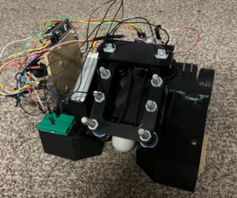

- Generated by
 1.9.6
1.9.6
|
ME 507 Term Project
|
The following website documentes the mechanical, electrical and software design of the "hungry hippo" robot created for our class competiton. My lab partner for this project and co-contributer is Andy McCormick. This site outlines the mechanical, electrical and software design of the robot as well as including all the classes and drivers developed for the project.
The mechanical components of this project include the robot chassis, ball intake mechanism, ball sorting mechanism and the robot wheels. The custom robot was designed around the rules and regulations of the ME 507 “Hungry Hippo” competition where autonomous robots must collect balls of their specified color and return them to their specified corral. Specific components of the mechanical design can be referneced in the sub-sections below.
After several conceptual iterations, a pair of belts driven by DC motors was selected to scoop balls and guide them to the sorting mechanism. A CAD and physical image of this intake assembly is shown below for reference. Overall, this design was effective at collecting ping pong balls and delivering them to the sorting mechanism.
The ball sorting mechanism was placed at the end of the intake track so that the balls funnel in after being collected. The intention was to use a “cup” based on the dimensions of a ping pong ball to hold a single ball in place while a sensor determines its color. After the color is identified, a servo motor sorts the ball to either store it on the chassis or reject it overboard. To reduce complexity, we intended to use the rotational inertia of the ball to send it out of the cup. A screenshot from the CAD model is shown below for reference.
The robot chassis was designed as the primary structural component that supports other mechanical mechanisms and mounts all electrical components and wheels. The chassis was made from 3D printed PLA as this option was readily available and allowed for complex, precise geometry. Although the chassis was too large to fit on our 3D printer bed, it was divided into several pieces with alignment mechanisms and glued together to form an assembly. The figures below document the chassis CAD as well as an image of the final assembly.

A custom printed circuit board (PCB) was designed to regulate a 12V LiPo battery to power all sensors, motors and an STM32F411 microcontroller on a single board. The board included 3x motor drivers to power the two rear wheels in each direction and the fly wheels part of the intake mechansim with a shared driver. I2C protocol was implemented to communicate with an IMU sensor and a color sensor. The image below shows the assembled PCB.
The robot software was designed with a cooperative multi-tasking approach. The final design presented on the demo day included two tasks whcih are summarized below. All drivers and classes developed in C++ can be referenced in the source code on this project website.
The movement task was used to control the movement of the robot by processing the encoder position data and IMU heading information. The state transition diagram for the task is shown below for reference.
The robot starts out by advancing to a set point from the encoders which results in it exiting the bay. The robot then turns about 60 degrees based on enncoder set points to face tangent to the arena middle circle. Next, the robot does circle around the arena with the flywheels running to collect balls. This circle path is accomplished by setting the duty cycle of the left and right wheel motors. Finally, the robot returns to the home bay based on the heading information from the IMU.
The sorting task processes the color sensor data to send position set points to the servo motor to sort the ping pong balls accordingly. The state transition diagram for this task can be referenced below.